03Website direction & build · Fictional website concept
A calm next step for anxious visitors.
Linden & Hale is a fictional estate-planning and probate practice. Its website is built around the two kinds of people who visit: those planning ahead, and those dealing with a death.
Linden & Hale is fictional. Not a real firm and not legal advice.
- Project
- Fictional website concept
- Role
- Direction, brand assets & review
- Deliverable
- Responsive practice website with interactive tools

The brief
People arrive during some of the hardest moments of their lives. How does a website feel calm and credible, and still help them act?
Visitors to an estate-planning site may be planning for family after a marriage or a birth, caring for an ageing parent, or settling the affairs of someone who has just died. The site has to meet each of them where they are — without claiming credentials or results it cannot back up.
- 01Feel calm and credible
- 02Give planners and the bereaved their own clear path
- 03Offer a safe way to ask for help
Writing
Write for the visitor, not the firm.
Earlier versions pitched a website to law firms. Linden & Hale speaks to the person who needs help — and the final version starts from their life, not the firm’s list of services.
Before they speak to your firm, they meet your website.
Preserve what matters, one calm step at a time.
Four ways the practice can help.
What brings you here today?
People arrive after a marriage, a birth or a death — not looking for “trusts”. The page now asks about their moment first.
Probate & estate administration: steady guidance for the person responsible for settling an estate.
When someone has died, you don’t have to work it out alone. There is no need to do everything at once.
Plain language first
Every document and decision explained before anyone is asked to sign — with a glossary for the words that can’t be avoided.
Orientation, not advice
Jurisdiction-dependent points are phrased generally, and deadlines are flagged rather than promised.
Fiction, clearly labelled
The team, the New York office and its phone numbers belong to the fiction; the numbers come from the 555-01xx range reserved for it. No credentials are claimed, and the fee basis stays a placeholder for a real firm.
What brings you here today? Eight life moments
- Married or partnered
- A new child
- Bought a home
- Caring for a parent
- Retiring
- Someone has died
- Named as executor
- Not sure yet
Design
Look like the firm people would trust.
The supplied serif lockup leads: it sits in the header and footer, and its voice carries into serif headings, spaced labels and quiet, document-like shapes. Custom illustrations show what people are protecting — family, home and memory.
#1F3A32Structure and action#F6F3ECReading surface#EDE6D6Warm panels#C79A52Accent text on Evergreen only#9C3B27Alerts only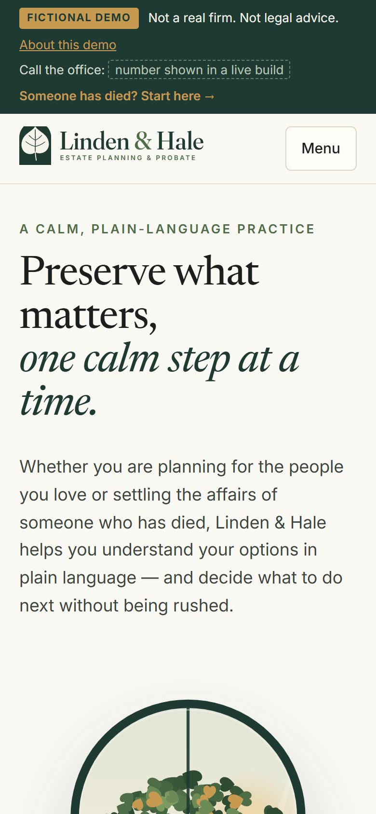
Two doors at the top
“Plan for my family” and “Help after a death” split the two audiences immediately, with “Someone has died? Start here” on every screen.
Family and legacy imagery
A linden tree through an arched window, a generational family tree and a candle by a dusk window, instead of stock photos of desks and documents.
Faces where trust lives
Each person sits in an arched window drawn in the same line-and-fill style as the rest of the site. The view behind them and one object beside them hint at their part of the work.
Development
Helpful to use, fine without JavaScript.
A single responsive Astro page with a hand-drawn SVG illustration set. Every section works without JavaScript; small TypeScript modules add the checklists, glossary, design notes, meeting pack and reading-comfort controls.
- Astro
- TypeScript
- Hand-written CSS
- Inline SVG illustration
- Native <dialog>
- Progressive enhancement
What it does
- A “Show the thinking” mode: twelve numbered design notes across the page
- A first-meeting pack that gathers your choices into one page to print, save as PDF or copy
- Reading comfort: three text sizes and a higher-contrast mode, remembered on the device
- Eight life moments, each with a first step and a checklist; a plain-language glossary
- The supplied lockup rebuilt as a responsive component, with a live-text descriptor
How it was checked
- Every section works without JavaScript: native disclosures, radios and CSS :has()
- No contrast failures, no broken anchors, no unlabelled controls in an automated audit
- Text links meet the 24px target size; text scales to 125% without horizontal scroll
- Nothing typed or ticked is sent or stored; the meeting pack is built in the browser
- Motion switches off under reduced motion
Evolution
From a pitch to a practice.
Seven versions of the same idea. Each one moved closer to the person reading it — v4 to v6 in a single day of review.
Northstar Legal concept
A seven-stage interactive demonstration of positioning, structure, copy, visual direction, interaction, responsive behaviour and the consultation path.
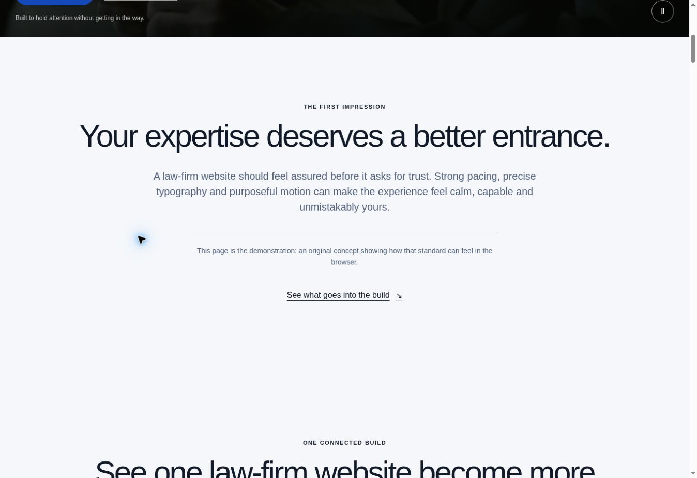
Cinematic proposal
“Before they speak to your firm, they meet your website.”
A motion-led pitch aimed at law firms, built around licensed stock footage.
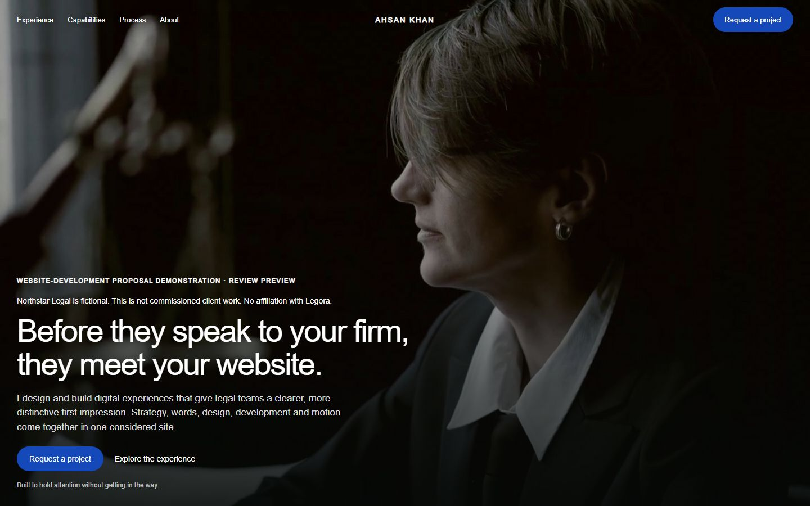
Linden & Hale
“Preserve what matters, one calm step at a time.”
Rebuilt as a complete practice website from a supplied identity, written for the visitor rather than the firm. Clear, but plain.
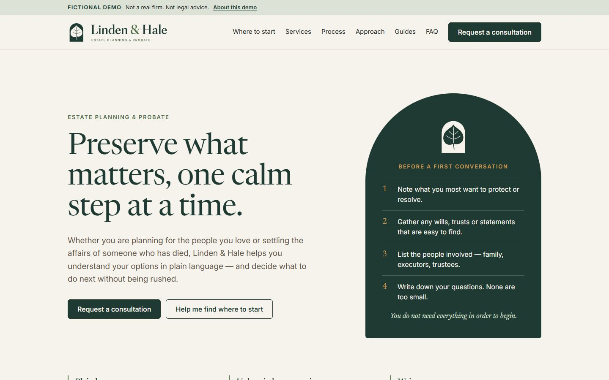
Crisp, interactive redesign
“Preserve what matters. One calm step at a time.”
A product-page rhythm with hands-on tools: a readiness checklist, personal gather lists, a glossary and FAQ search. Polished — but it read like a tech product, not a law firm.
- Readiness checklist
- Gather lists
- Glossary
- FAQ search
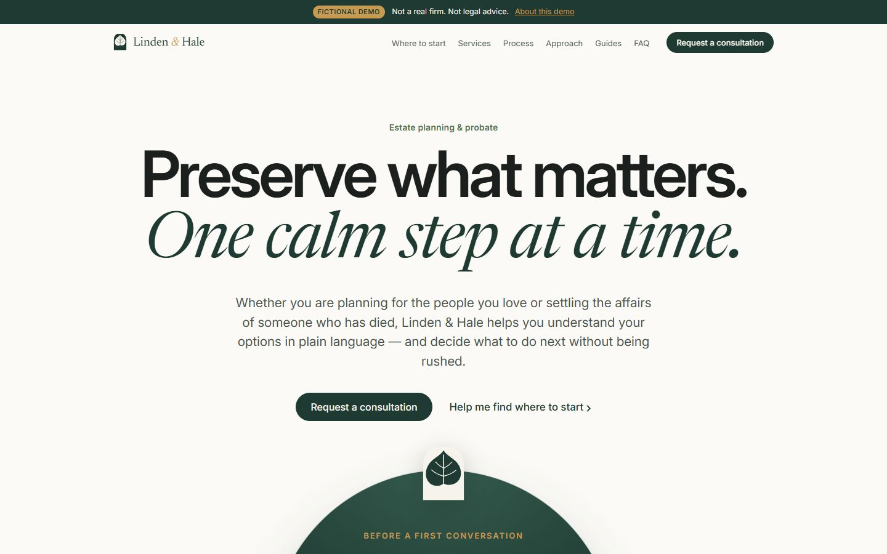
Hero 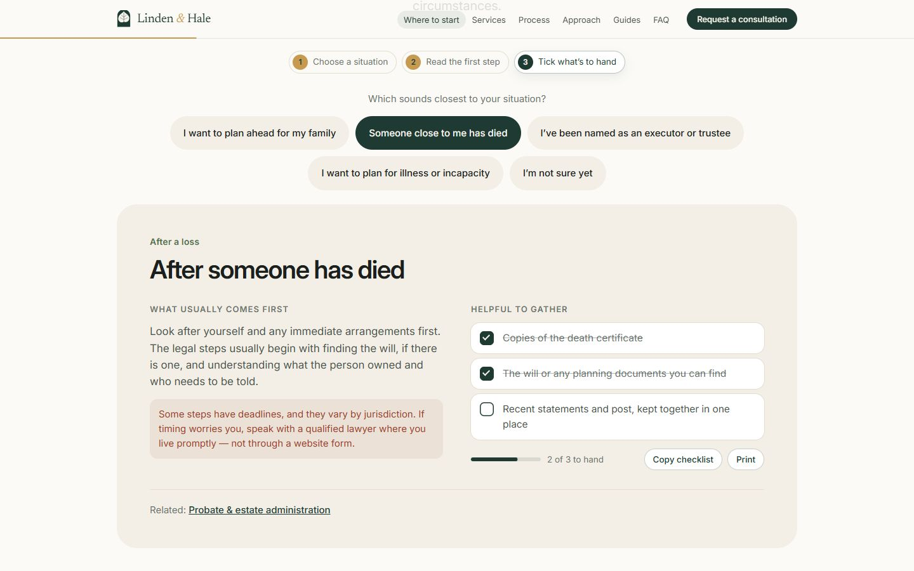
New: a guided start with a personal checklist An illustrated linden world
A custom illustration set in the brand palette: an arched window onto a swaying linden tree, spot art for every service and illustrated guide covers. Livelier — but still not obviously an estate-planning firm.
- Hero window scene
- Service illustrations
- Guide covers
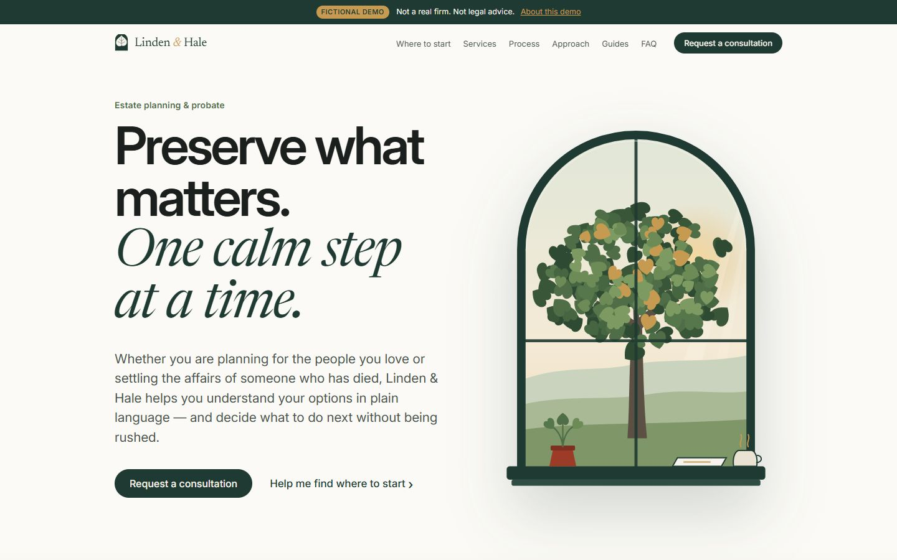
Hero 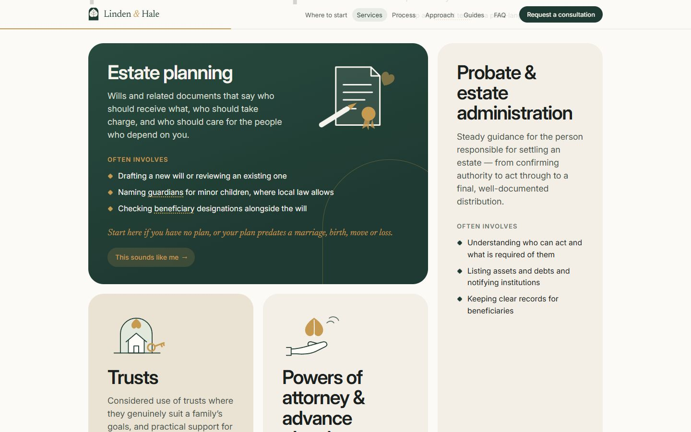
New: an illustration for every service Brand-led, audience-first
“Preserve what matters, one calm step at a time.”
Reorganised around its visitors: the supplied logo, two doors, eight life moments, an after-a-death section, fees and labelled placeholders — then design notes, a printable meeting pack and reading-comfort controls.
- Supplied logo
- Two doors
- Life moments
- Show the thinking
- Meeting pack
- Reading comfort
Hero 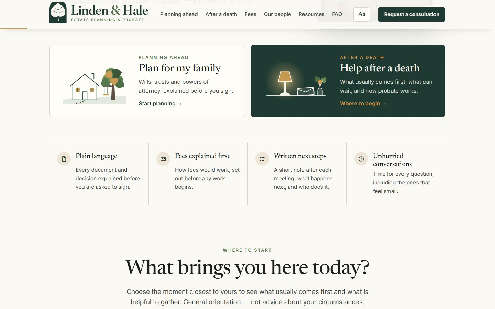
New: two doors for the two audiences A cast for the fiction
The placeholders became people: a named team with illustrated portraits, a New York office with 555-01xx numbers, and a resources section rebalanced so the glossary runs full width under the guides.
- Team portraits
- New York office
- Balanced resources
The result
A practice website built around its visitors.
A calm, brand-led estate-planning site with separate paths for planning ahead and after a death, life-moment guidance, fees in plain language, resources and a safe consultation request. No legal outcome or business result is claimed.
The biggest change wasn’t polish or animation. It was deciding, section by section, who the page was for — and letting the firm’s own brand lead.
Try it yourself
Three things to do on the live demo. Nothing you tick or type is sent or saved.
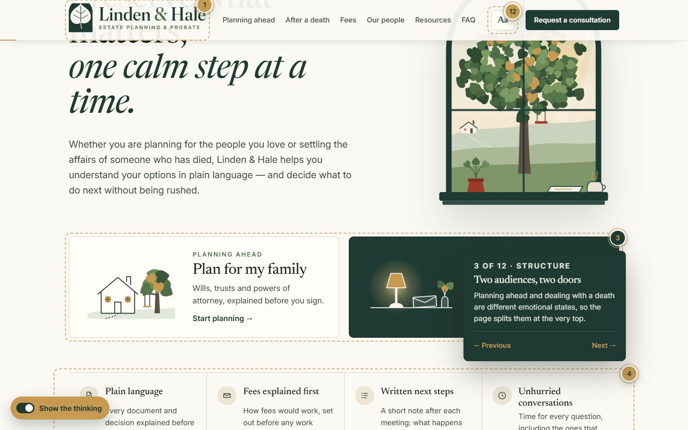
Show the thinkingTurn on the gold switch in the corner to read twelve design notes in place, from the logo to the form.Open the demo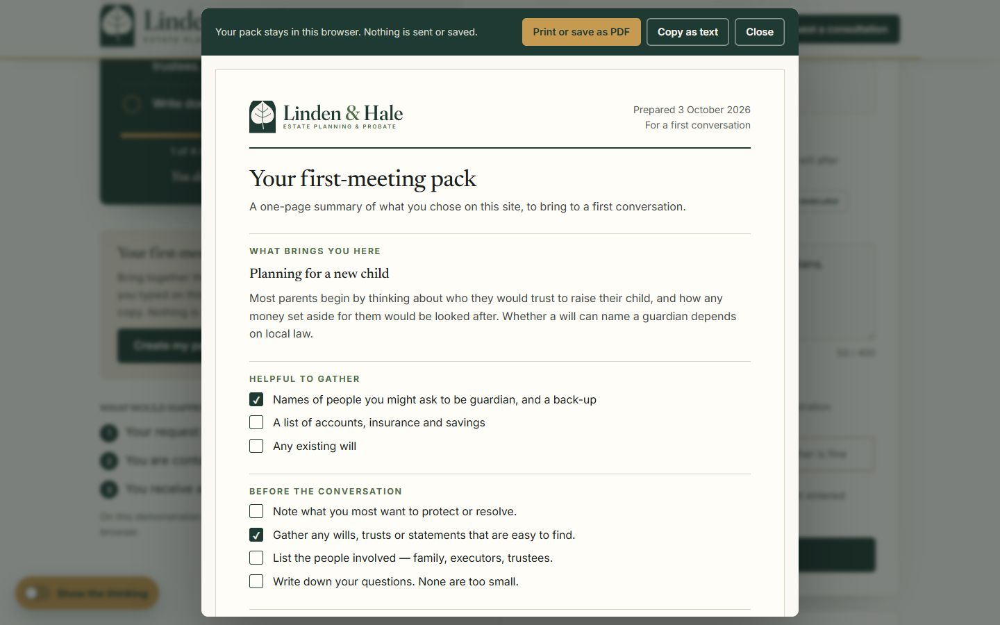
Make a first-meeting packPick a life moment, tick what you have to hand, then create a one-page pack to print or save as PDF.Choose a moment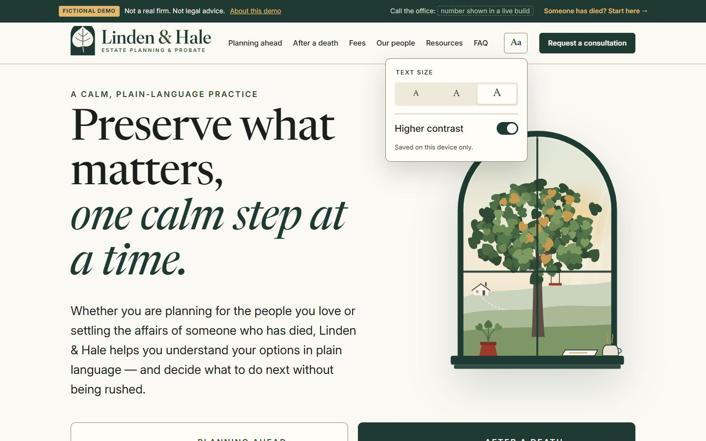
Read it your wayUse “Aa” in the header for larger text or higher contrast — it’s remembered on your device.Try larger text
Ahsan: project direction, brand assets and review at every version. AI-assisted delivery: Dave drafted the copy and built v3; the later redesigns, illustrations and interactive tools were built with AI assistance under Ahsan’s direction.
Linden & Hale is fictional, and so are its people, office and phone numbers. This is not commissioned client work, legal advice or evidence of conversion lift. No real attorney, credential, client quotation or legal outcome is claimed.